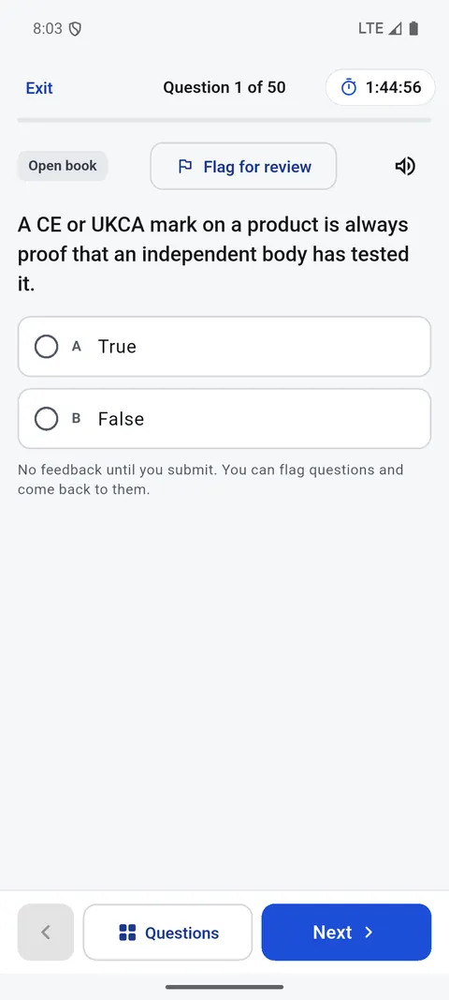
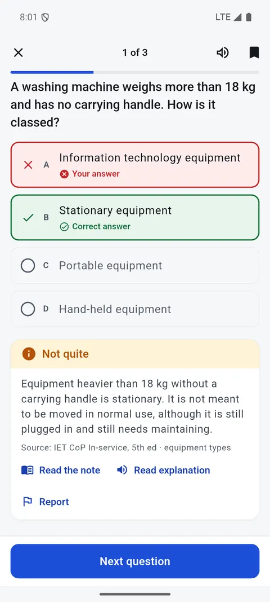

Not a government app. Sparkwise is an independent study app made by Kodfu Bilisim. It is not affiliated with or endorsed by the IET, BSI, City & Guilds, EAL, NET, the ECS, the JIB, NICEIC, NAPIT, MCS, HSE or OZEV. It does not contain the real exam questions and never reproduces BS 7671 text.
All exams › PAT testing (2377-77)
PAT testing exam questions (City & Guilds 2377-77)
The City & Guilds 2377-77 PAT testing award ends with an online multiple-choice test: 50 questions in 1 hour 45 minutes, open book with the IET Code of Practice, and you need 80% to pass. This page sets out the format and what the test covers, then gives you 8 free practice questions with answers. Sparkwise has 273 like them, with explanations, and timed mocks in the same format.
Practise PAT 2377: get Sparkwise on Google Play Try 8 free questions
Free in the app: 101 PAT questions and one full mock. PAT 2377 unlock: £7.99 once for all 273 questions and every mock. No subscription. Android now; iPhone version not yet available.
On this page
The 2377-77 exam format
The Level 3 Award in the In-Service Inspection and Testing of Electrical Equipment (2377-77) has two parts, and you must pass both: an online knowledge test (2377-701) and a practical assignment (2377-702) where you inspect and test a Class I and a Class II item and complete the records. Sparkwise covers the online test.
| Item | 2377-701 online test |
|---|---|
| Questions | 50 multiple choice |
| Time | 1 hour 45 minutes |
| Pass mark | 80%, which is 40 of 50 |
| Book | Open book: a paper copy of the IET Code of Practice for In-Service Inspection and Testing of Electrical Equipment, 5th edition |
| Calculator | A non-programmable scientific calculator |
| How | On screen at an approved centre, on demand, invigilated |
| Sparkwise mock | 50 questions, 1 hour 45 minutes, 40 to pass, with the same topic mix |
Source: the City & Guilds 2377-77 qualification handbook (v1.2) and its 2377 qualification page. Tabs, highlighting and short cross-references in your book are allowed; added notes and printed pages are not. Check the rules with your centre before the day.
What the exam covers
City & Guilds publishes how many of the 50 questions come from each learning outcome. Combined inspection and testing is more than a third of the paper, so it is where most marks are won or lost. Sparkwise mocks draw questions in the same proportions.
| Learning outcome | Questions in the real test | Questions in Sparkwise |
|---|---|---|
| Definitions in the Code of Practice | 4 | 26 |
| Statutory and non-statutory requirements | 6 | 34 |
| Units of measurement | 3 | 20 |
| Construction classes and protection against shock | 8 | 41 |
| User checks, frequency, risk assessment and formal visual inspection | 8 | 42 |
| Combined inspection and testing: instruments, isolation, earth continuity, insulation, leakage, polarity and RCD tests | 18 | 90 |
| Recording information: records, registers and labels | 3 | 20 |
The law behind PAT is short: the Electricity at Work Regulations 1989 require equipment that could cause danger to be maintained, but they set no method or interval. The intervals and checks in the exam come from guidance such as HSE’s HSG107 and the Code of Practice, so questions often ask what the guidance suggests rather than what the law demands.

The same 50 questions, the same clock
The Sparkwise PAT mock runs for 1 hour 45 minutes, keeps time if you leave the app, lets you flag questions and come back, and reminds you that the test is open book. At the end you see your score against 40 of 50 and which areas cost you marks.
8 free PAT testing exam questions
One question from each Sparkwise PAT topic, with the answer and a short explanation. They are original questions written from HSE guidance, the law and public summaries of the Code of Practice, not the real City & Guilds questions: no app or website can show you those.
Question 1 · Choose one answer
A mobile phone charger is plugged into a 230 V socket. Which part is within the scope of in-service checks?
- The mains charger in the socket
- Only the phone's internal battery pack
- Only the phone screen and its casing
- Nothing, as phones are excluded entirely
Show the answer
Answer A: The mains charger in the socket
Mains-powered battery chargers are portable equipment. The battery-powered phone itself is not, because it does not connect to the mains while in use.
Source: INDG236 · portable and movable equipment
Question 2 · Choose one answer
Which PUWER 1998 regulation deals with inspection where deterioration of equipment could lead to danger?
- Regulation 4
- Regulation 9
- Regulation 22
- Regulation 6
Show the answer
Answer D: Regulation 6
Regulation 6 requires inspection where safety depends on installation conditions or where equipment is exposed to conditions causing deterioration that could result in danger.
Source: PUWER 1998 reg 6
Question 3 · Choose one answer
A lead's protective conductor measures 0.06 Ω. An identical lead twice as long would measure about what?
- 0.12 Ω
- 0.03 Ω
- 0.06 Ω
- 0.24 Ω
Show the answer
Answer A: 0.12 Ω
Resistance is proportional to length, so doubling the length doubles the resistance: 0.06 × 2 = 0.12 Ω.
Source: R ∝ length ÷ cross-sectional area
Question 4 · Choose one answer
What is fault protection?
- Protection against overloading a socket-outlet
- Protection against metal that becomes live after a fault
- Protection against touching live parts in normal use
- Protection against short circuits between line and neutral
Show the answer
Answer B: Protection against metal that becomes live after a fault
Fault protection deals with exposed-conductive-parts made live by an insulation failure, for example through earthing and automatic disconnection, or double insulation.
Source: BS 7671 Part 2 · fault protection
Question 5 · Choose one answer
According to HSG107, what combined inspection and test interval is suggested at first for an earthed (Class I) kettle?
- Never needed
- 1 to 2 years
- Every week
- 5 to 10 years
Show the answer
Answer B: 1 to 2 years
HSG107 suggests 1 to 2 years for combined testing of Class I items such as kettles, with formal visual inspection every 6 months to 1 year and user checks.
Source: HSG107 Table 1 · Class I
Question 6 · Choose one answer
Why is a high current earth continuity test preferred for robust equipment such as an electric fire?
- It removes corrosion from the earth terminals
- It stresses weak joints and connections
- It is quicker to set up than the low current test
- It also measures the insulation resistance
Show the answer
Answer B: It stresses weak joints and connections
A high current can reveal weak strands or poor joints that a low current might pass. It is avoided only where electronics could be damaged.
Source: IET CoP In-service · earth continuity
Question 7 · Choose one answer
Which condition must be met for a protective conductor current test?
- The equipment must be switched on and working
- The equipment must be disconnected from all supplies
- The equipment's fuse must be removed
- The equipment's earth must be disconnected
Show the answer
Answer A: The equipment must be switched on and working
Leakage currents depend on the equipment operating, so it must be energised at normal voltage and switched on. Take care with moving parts and heat.
Source: IET CoP In-service, 5th ed · leakage tests
Question 8 · Select TWO answers
Which TWO details would you expect to find in an equipment register entry? Select TWO.
- The equipment's location
- Its equipment class
- The tester's home address
- The price paid for the item
Show the answer
Answer A: The equipment's location, B: Its equipment class
A register normally records identification, description, location, class and type, and inspection intervals. Personal or purchase details are not needed for safety.
Source: C&G 2377-77 handbook · LO7 range
You’ve seen 8 of 273 questions for the PAT testing (2377-77)
The Sparkwise app has all 273 across 8 topics, each with an explanation and where to look, and 18 calculations have a step-by-step worked solution. It also has timed 50-question mocks of 1 hour 45 minutes with the 40-of-50 pass mark.
101 of them are free in the app. The PAT 2377 unlock is £7.99 one-off: every question and every mock for this exam. Or get All exams, £24.99 one-off: all 12 exams in Sparkwise and any exam added later. No subscription.
Android now; iPhone version not yet available.
How to prepare for the online test
- Know your book. The test is open book, so speed at finding the tables for test limits, equipment types and suggested intervals matters more than memory. Tab the sections you use most.
- Learn the limits cold anyway. Earth continuity of 0.1 Ω plus the cord’s protective conductor, insulation resistance minimums for Class I and Class II, and when to use 250 V instead of 500 V come up again and again. Looking up every one costs time.
- Practise the calculations. Cord resistance from length and cross-section, and simple Ohm’s law and power sums, appear in several learning outcomes. Sparkwise has 18 worked solutions for these.
- Sit a full mock before the day. 105 minutes is plenty for 50 questions if you do not look everything up. A timed mock shows whether you are spending too long in the book.
FAQ
How many questions are in the 2377-77 PAT testing exam?
The online knowledge test (2377-701) has 50 multiple-choice questions and lasts 1 hour 45 minutes. You need 80%, which is 40 of 50. You also have to pass the practical assignment (2377-702).
Is the PAT testing exam open book?
Yes. You can take a paper copy of the IET Code of Practice for In-Service Inspection and Testing of Electrical Equipment (5th edition) and a non-programmable scientific calculator. Electronic copies are not allowed in the online test.
Are these the real 2377 exam questions?
No. Every question on this page and in Sparkwise is original, written from public sources on the same topics. Sparkwise is an independent app and is not linked to City & Guilds or the IET.
How much is PAT 2377 in Sparkwise?
Sparkwise is free to download, with 101 PAT questions and one full mock free. The PAT 2377 unlock is a one-off £7.99 for every question and mock. All exams, a one-off £24.99, unlocks all 12 exams in the app, including the 18th Edition and the 2391.
What should I study after PAT testing?
Electricians often move on to inspection and testing of installations. See our 2391 exam questions, or the 18th Edition exam guide if your wiring regulations qualification needs updating to BS 7671:2018+A4:2026.
Practise the C&G 2377-77 PAT testing exam in the Sparkwise app
273 original questions for the C&G 2377-77 PAT testing exam, each with an explanation and where to look, and timed 50-question mocks of 1 hour 45 minutes with the 40-of-50 pass mark. Spaced review brings back the questions you got wrong.
- Works offline. No ads, no account, no data collected.
- The same app has the 18th Edition, the ECS HS&E and every other exam: see all 12.


Free: two full topics and three questions in every other topic, and one full mock (101 questions).
PAT 2377, £7.99 one-off: every question and every mock for this exam.
All exams, £24.99 one-off: all 12 exams in Sparkwise and every exam we add later. No subscription.
Android now; iPhone version not yet available. Sparkwise helps you prepare; it cannot promise a pass.
Where the exam facts come from
The format, time and pass mark above come from these public pages. Check them, or ask your centre, before you book.
- 2377 Electrical Equipment Maintenance and Testing (City & Guilds)
- Maintaining portable electrical equipment (INDG236) (Health and Safety Executive (HSE))
- Portable appliance testing FAQs (Health and Safety Executive (HSE))
- The Electricity at Work Regulations 1989 (legislation.gov.uk)
Exam details can change. Sparkwise is not linked to any awarding or assessment body.